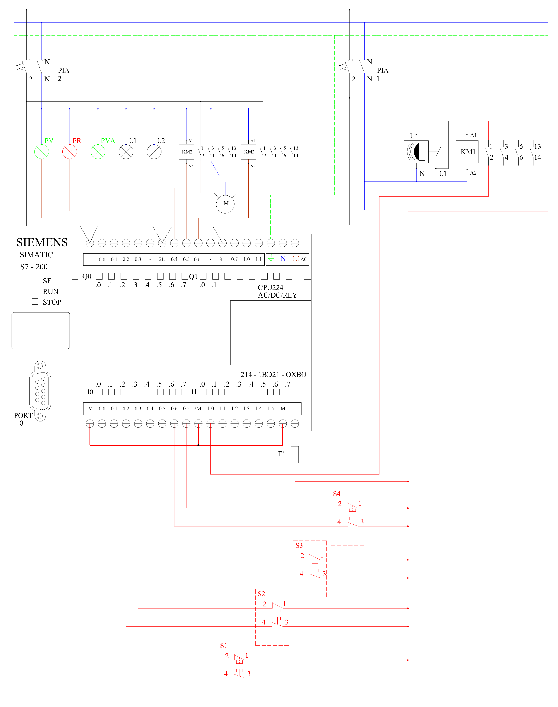

5.- Vivienda con control de alarma y persianas
1. Asignación de señales en el autómata programable.
- I0.0: Pulsador marcha (S1) — contacto NO.
- I0.1: Pulsador paro (S1) — contacto NC.
- I0.2: Pulsador marcha (S2) — contacto NO.
- I0.3: Pulsador paro (S2) — contacto NC.
- I0.4: Pulsador marcha (S3) — contacto NO.
- I0.5: Pulsador paro (S3) — contacto NC.
- I0.6: Pulsador marcha (S4) — contacto NO. Orden de subir.
- I0.7: Pulsador paro (S4) — contacto NC. Orden de bajar (ver nota).
- I1.0: Detector de movimiento (DM) — contacto del contactor KM1 que adapta la señal del detector.
- Q0.0: Piloto verde (PV).
- Q0.1: Piloto rojo (PR).
- Q0.2: Piloto verde alarma (PVA).
- Q0.3: Lámpara de alarma (L1).
- Q0.4: Lámpara del detector (L2).
- Q0.5: Contactor KM2 — subir persiana.
- Q0.6: Contactor KM3 — bajar persiana.
Entradas digitales
Salidas digitales
2. Programa en Ladder (S7-200)
| Bloque / Segmento | Lógica | Función |
|---|---|---|
| Segm. 1 | I0.0 → S M0.0 (1) | /I0.1 → R M0.0 (1) | Memoria de circuito activado |
| Segm. 2 | M0.0 → Q0.0 | /M0.0 → Q0.1 | Piloto verde / piloto rojo |
| Segm. 3 | I0.2 → TON T37, PT = 50 (5 s) | Detecta pulsación larga de S2 |
| Segm. 4 | T37 → S M0.2 | I0.2 + flanco P → R M0.2 | Recuerda que la pulsación fue larga |
| Segm. 5 | I0.2 + flanco N + /M0.2 → conmuta M0.1 | Pulsación corta de S2: L2 permanente ON/OFF |
| Segm. 6 | T37 + flanco P → S M0.3 | M0.3 → TON T38, PT = 600 (60 s) | T38 → R M0.3 | L2 encendida 1 minuto |
| Segm. 7 | /I0.3 + /M0.0 → R M0.1, R M0.3 | Paro de S2 o del circuito apaga L2 |
| Segm. 8 | M0.0 · (I1.0 + M0.1 + M0.3) → Q0.4 | Salida lámpara del detector L2 |
| Segm. 9 | M0.0 · I0.4 + flanco P → conmuta M0.4 (telerruptor) | S3: activar / desactivar la alarma |
| Segm. 10 | /I0.5 + /M0.0 → R M0.4 (1) | Paro de S3 o del circuito desactiva la alarma |
| Segm. 11 | M0.4 → Q0.2 | Piloto verde de alarma activada |
| Segm. 12 | M0.4 · I1.0 → S M0.5 (1) | /M0.4 → R M0.5 (1) | M0.5 → Q0.3 | Disparo y enclavamiento de la alarma L1 |
| Segm. 13 | M0.0 · I0.6 + flanco P → conmuta M1.0 | Q0.6 → R M1.0 | Marcha/parada de la subida (S4 marcha) |
| Segm. 14 | M0.0 · /I0.7 + flanco P → conmuta M1.1 | Q0.5 → R M1.1 | Marcha/parada de la bajada (S4 paro) |
| Segm. 15 | /M0.0 → R M1.0, R M1.1 | El paro del circuito detiene la persiana |
| Segm. 16 | M1.0 · /Q0.6 → Q0.5 | M1.1 · /Q0.5 → Q0.6 | Subir / bajar con enclavamiento mutuo |
La conmutación del telerruptor (segmentos 5 y 9) se programa con la combinación habitual de flanco y memorias: con el flanco, si la memoria está a 0 se pone a 1 y si está a 1 se pone a 0.
Nota: en el esquema del S7-200 solo hay cuatro pulsadores, así que la persiana se maneja con S4: el botón verde (I0.6) sube y el rojo (I0.7, contacto NC) baja. Cada orden se detiene volviendo a pulsar el mismo botón. Para tener S5 como en el LOGO! habría que cablearlo en I1.1 (marcha) e I1.2 (paro).
3. Esquema
Esquema multifilar de la práctica 5.

×